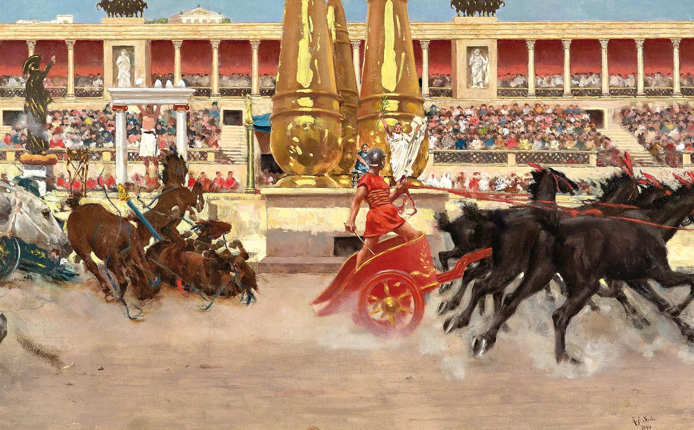
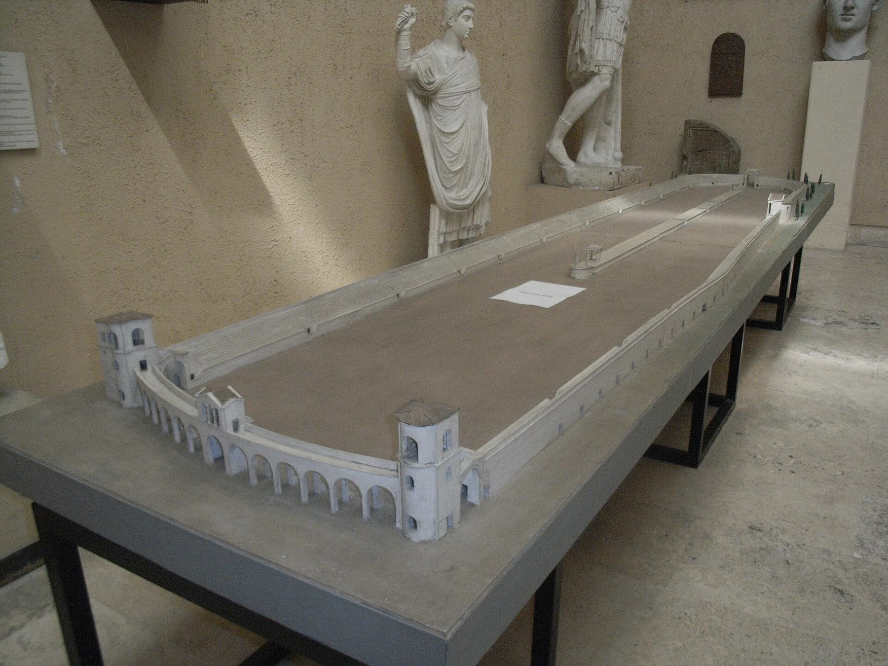

Donde Roma corría por la gloria. Descubre el rugido de las gradas, el riesgo de los aurigas y el poder de un espectáculo que deslumbró al imperio.
06 ESPACIOSMAPA TÁCTILCARRERA DE CUADRIGASGUÍA GUILLE
RECREACIÓN ARTÍSTICA CON IA · INTERPRETACIÓN HIPOTÉTICA. NO ES UNA RECONSTRUCCIÓN ARQUEOLÓGICA EXACTA.
SPQR ROMA IMPERIAL
Roma · Valle Murcia
Entre las colinas Palatina y Aventina
c. 600 m
Longitud aproximada del edificio monumental
7 vueltas
Modalidad habitual de carrera imperial
4 facciones
Blancos, rojos, verdes y azules
DUDAS, RUINAS Y RECONSTRUCCIONES · DOS MIRADAS A ROMA
RECREACIÓN CON IA · ROMA IMPERIAL
El esplendor de un espectáculo imperial
Una interpretación visual para imaginar la escala y la emoción; no es una fotografía de la Antigüedad.
FOTOGRAFÍA · ROMA ACTUAL
El Circo Máximo que puedes recorrer hoy
El espacio arqueológico conserva su trazado en el paisaje urbano de Roma.
Dos recursos distintos: una recreación artística con IA y una fotografía actual de Peter Clarke (CC BY-SA 3.0). Los créditos y las fuentes documentales se conservan al pie de la exposición.
Itinerario del visitante
Seis espacios para vivir la historia
Explora cada espacio en orden o selecciona el tema que prefieras. Guille te acompañará con explicaciones en voz alta.
~600 × 140 mDimensiones generales indicadas por Turismo de Roma
150–250 milCifras históricas y estimaciones de aforo, no un dato exacto
Importante: el Circo Máximo no debe confundirse con el Coliseo. Las carreras de carros eran su espectáculo característico; el anfiteatro se especializó en otros tipos de espectáculos.
Un recinto que cambió durante siglos
Selecciona una época para descubrir cómo se transformó el enorme valle romano.
Según la tradición histórica, en el valle entre el Palatino y el Aventino se celebraban juegos y carreras desde la época de los reyes de Roma. Las instalaciones variaron con el tiempo.
ESPACIO 02 · CIRCO ROMANOLa arquitectura que movía multitudesFONDO: RECREACIÓN ARTÍSTICA CON IA · INTERPRETACIÓN HIPOTÉTICA
Espacio 02 · Plano didáctico
La anatomía de una carrera
02 / 06
Toca los puntos del plano
ELEMENTO SELECCIONADO
Cavea · el graderío
Gradas que permitían ver las carreras desde los lados y el extremo curvo. Su extensión creció durante la República y el Imperio.
Pregunta: ¿por qué las gradas necesitaban accesos para tanta gente?
El esquema muestra funciones y posiciones generales. La arquitectura del Circo cambió entre periodos; ningún dibujo simplificado reproduce todos sus detalles. Los contadores de huevos y delfines ayudaban a seguir las vueltas. Las metae eran conjuntos de postes cónicos. El extremo de las carceres no era idéntico al extremo curvo.
ESPACIO 03 · CIRCO ROMANOCuatro colores, una pasiónFONDO: RECREACIÓN ARTÍSTICA CON IA · INTERPRETACIÓN HIPOTÉTICA
Espacio 03 · Ídolos y colores
Los héroes de la pista
03 / 06

Pintura histórica · 1894. Raffaello Sorbi, Chariot Race in the Circus. Obra en dominio público, reproducción vía Wikimedia Commons. Es una interpretación artística del siglo XIX, no una fotografía ni un testimonio contemporáneo de la antigua Roma. Copia optimizada a WebP.
¿A qué facción apoyarías?
Los espectadores seguían equipos diferenciados por colores. Selecciona uno para conocer su nombre latino.
No eran selecciones nacionales modernas. Eran facciones deportivas con seguidores, caballos, aurigas y organización profesional.
PRASINA · VERDES
¡Vamos, verdes!
Imagina a las gradas animando a tu auriga favorito. El color de tu facción era una forma de pertenencia y rivalidad deportiva.
Los cuatro colores se documentan en la Roma imperial
El auriga y la cuadriga
El auriga conducía el carro. Una biga iba tirada por dos caballos; una cuadriga, por cuatro. Las curvas eran especialmente peligrosas: el vuelco y los choques podían causar heridas graves.
Algunos aurigas se convirtieron en celebridades, aunque su posición jurídica y sus condiciones de vida podían ser muy diferentes.
Protagonistas documentados
Cayo Apuleyo Diocles, auriga de Lusitania del siglo II d. C., compitió con blancos, verdes y rojos. Su inscripción honorífica (CIL VI 10048) registra 1,462 victorias en 4,257 salidas con cuadrigas.
Flavio Escorpo fue otro auriga célebre del siglo I d. C. El poeta Marcial lamentó su muerte a los 26 años (Epigramas 10.53): la fama convivía con un oficio peligroso.
Los caballos también eran entrenados y celebrados. La coordinación del tiro, especialmente en las curvas, dependía de la destreza del conductor y del equipo.
ESPACIO 04 · CIRCO ROMANOSiete vueltas. Un solo vencedor.FONDO: RECREACIÓN ARTÍSTICA CON IA · INTERPRETACIÓN HIPOTÉTICA
Espacio 04 · Simulación educativa
¡Siete vueltas en el Circo Máximo!
04 / 06
Tu cuadrigaRivalCada turno recorre una vuelta completa
Modelo simplificado de estrategia. La mecánica de riesgos y puntuación es inventada para aprender: no recrea una carrera histórica concreta.
Tu cuadriga, tu decisión
Vuelta 0 de 7Preparado
Resistencia de los caballos: 100 %
La multitud ruge. El magistrado alza la señal. Selecciona tu estrategia y comienza.
ESPACIO 05 · CIRCO ROMANOPolítica, multitudes y memoriaFONDO: RECREACIÓN ARTÍSTICA CON IA · INTERPRETACIÓN HIPOTÉTICA
Espacio 05 · Cultura, política y fuentes
Más que una carrera
05 / 06
Un espacio de vida pública
El circo reunía públicos numerosos y también servía para procesiones, celebraciones religiosas y actos de poder. Era un escenario en el que gobernantes y multitud podían verse y escucharse.
La popularidad de las carreras fortaleció a las facciones y convirtió a algunos aurigas en figuras célebres.
La historia del circo también es la historia de las multitudes que lo llenaban.
¿Qué significaba «pan y circo»?
La expresión latina panem et circenses, popularizada por el poeta satírico Juvenal, criticaba la reducción de las aspiraciones cívicas a alimento y espectáculos. No significa que todos los romanos fueran pasivos ni describe por sí sola toda la política imperial.
AYER
Un espectáculo de masas
Caballos, equipos, público, comercio, ceremonias y riesgos reales en una arena monumental.
HOY
Un sitio arqueológico vivo
Un espacio abierto de Roma, con actividades culturales y proyectos de interpretación del patrimonio.
Pregunta crítica: ¿cómo puede un espectáculo generar identidad colectiva y, al mismo tiempo, servir de escenario para expresar apoyo o descontento político?
ESPACIO 06 · CIRCO ROMANOEl desafío de GuilleFONDO: RECREACIÓN ARTÍSTICA CON IA · INTERPRETACIÓN HIPOTÉTICA
Espacio 06 · Evaluación interactiva
El desafío final de Guille
06 / 06

Fotografía de maqueta moderna. Notafly, 2008 · Wikimedia Commons · CC BY-SA 3.0. No es una fotografía del circo antiguo. Copia optimizada a WebP.
¿Qué aprendiste de Roma?
Responde diez preguntas. El cuestionario se califica automáticamente en tu dispositivo, sin recopilar nombres, correos ni información personal.
10Preguntas
100 %Puntaje máximo
Puedes volver a explorar cualquier espacio y repetir la evaluación cuantas veces necesites.
¡Bienvenidos al Circo Máximo! Aquí no solo corrían carros: también latía la vida de la ciudad romana.
Fuentes, créditos y criterio histórico
Material didáctico destinado a secundaria. Las fotografías muestran el estado actual del lugar; los planos y el simulador son recursos educativos, no reconstrucciones arqueológicas exactas. Las cifras de aforo son estimaciones históricas controvertidas.
Fotografías actuales: Peter Clarke, Tom Corser y Krzysztof Golik. Autoría, fuente y licencia junto a cada imagen; versiones WebP optimizadas del museo. Los planos de pista son esquemas educativos sin escala.
Inscripción de Diocles: CIL VI 10048; Marcial, Epigramas 10.53: Escorpo. Los textos antiguos expresan sus propios contextos y perspectivas.
Portada y fondos: recreación artística con IA del paquete Premium V2, octubre de 2026. Interpretación hipotética; no reconstrucción arqueológica exacta.
Pintura: Raffaello Sorbi, Chariot Race in the Circus, 1894; dominio público, vía Wikimedia Commons. Fotografía de maqueta: Notafly, 2008, CC BY-SA 3.0; Museo della Civiltà Romana. Se distinguen expresamente de las fotografías arqueológicas actuales.